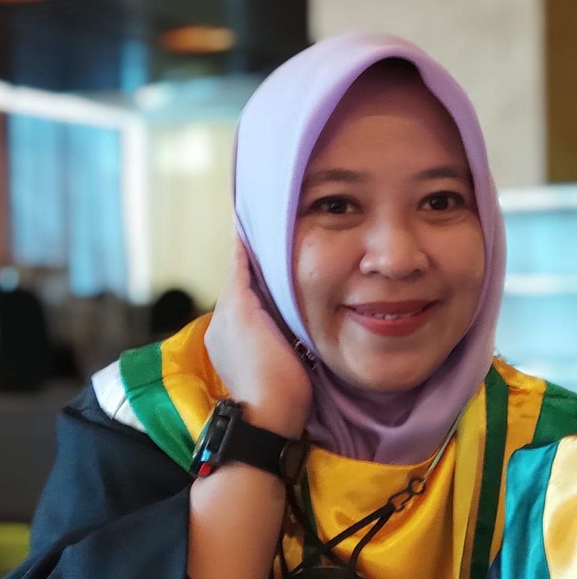

Visi
Menghasilkan lulusan yang unggul, berdaya saing, profesional, kompeten dan berkarakter yang berbasis dengan nilai-nilai kearifan lokal serta mengembangkan ilmu pendidikan matematika di kawasan timur Indonesia pada tahun 2028.
Misi
- Menyelenggarakan proses pendidikan yang unggul, profesional dan berkarakter yang berbasis dengan nilai-nilai kearifan lokal.
- Menyelenggarakan pendidikan dan pengajaran di bidang matematika dengan kurikulum berbasis kompetensi sesuai dengan perkembangan kebutuhan masyarakat dengan orientasi pada penguasaan IPTEK, serta pengembangan kepribadian.
- Menyelenggarakan penelitian guna pengembangan keilmuan dibidang matematika yang terkait dengan pendidikan, pembangunan serta perkembangan IPTEK.
- Menyelenggarakan pengabdian kepada masyarakat untuk memberdayakan dan mengembangkan potensi sumber daya manusia melalui Program Pengenalan Lapangan (PPL) di sekolah-sekolah, serta penyebarluasan hasil penelitian.
- Membangun kerjasama dengan instansi pendidikan baik negeri maupun swasta guna pengembangan kompetensi serta meningkatkan relevansi pembelajaran, penelitian, dan pengabdian kepada masyarakat.
Tujuan dan Strategi
Tujuan
- Menghasilkan tenaga pendidik yang berkualitas, berdaya saing tinggi, berkepribadian yang terpuji sesuai dengan kebutuhan pengembangan pendidikan dan mampu berperan dalam pengembangan pendidikan nasional dan daerah.
- Menghasilkan lulusan yang memiliki kemampuan pengajaran di bidang matematika, dan mampu bersaing secara global serta memiliki perhatian dan pendekatan sehingga dapat membimbing peserta didik dengan baik dan efektif.
- Menghasilkan karya penelitian ilmiah dan terapan dalam bidang pengajaran matematika yang dapat memberikan kontribusi terhadap pengembangan ilmu dan pemecahan masalah dalam masyarakat.
- Berperan aktif dalam upaya peningkatan kesejahteraan masyarakat melalui kegiatan pengabdian masyarakat dengan mengembangkan hubungan kerja sama dengan sekolah-sekolah mitra serta memanfaatkan hasil pemikiran dan penelitian dalam bidang pendidikan matematika.
- Mampu berkomunikasi, memimpin, dan menerapkan nilai sikap sipakatau, sipakainga', sipakalabbi' dalam pengetahuan serta keterampilan teknologi bidang pengajaran Matematika.
Strategi
- Meningkatkan moral, etika, etos kerja, kemandirian, dan kedisiplinan serta kompetensi profesional, kepribadian, dan sosial mahasiswa Prodi Pendidikan Matematika.
- Sarana dan prasarana serta fasilitas laboratorium untuk penunjang kurikulum berbasis Merdeka Belajar Kampus Merdeka (MBKM) berstandar nasional.
- Meningkatkan kompetensi dosen dengan melaksanakan kegiatan-kegiatan yang bersifat penelitian dan pengabdian kepada masyarakat.
- Meningkatkan kerja sama dan membangun jaringan kemitraan kepada perguruan tinggi dan sekolah-sekolah baik negeri maupun swasta.
- Meningkatkan kualitas dosen dengan melanjutkan pendidikan ke jenjang yang lebih tinggi, serta mengikuti pelatihan/penataran yang berkaitan dengan soft skill dan hard skill.
Kaprodi

Ari Wibowo, S.Pd.I., M.Pd.
Kaprodi Program Studi
Pendidikan Matematika
Fakultas Keguruan dan Ilmu Pendidikan
Universitas Sawerigading Makassar
Dosen

Titik Pitriani Muslimin, S.Pd., M.Pd.
Dosen Pendidikan Matematika
Fakultas Keguruan dan Ilmu Pendidikan
Universitas Sawerigading Makassar

Ady Akbar, S.Pd., M.Pd.
Dosen Pendidikan Matematika
Fakultas Keguruan dan Ilmu Pendidikan
Universitas Sawerigading Makassar
Ari Wibowo, S.Pd.I., M.Pd.
Dosen Pendidikan Matematika
Fakultas Keguruan dan Ilmu Pendidikan
Universitas Sawerigading Makassar

Nana Harlina Haruna, S.Pd., M.Pd.
Dosen Pendidikan Matematika
Fakultas Keguruan dan Ilmu Pendidikan
Universitas Sawerigading Makassar